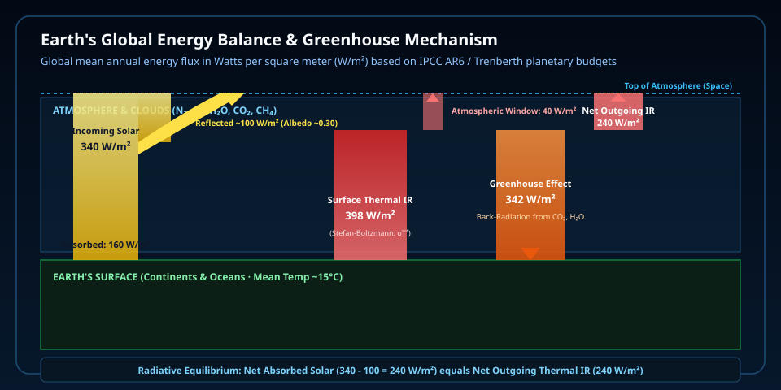

🌍 Climate Modeling Simulator
Adjust CO₂, solar irradiance, ice coverage, deforestation, and methane to explore a simplified climate system. Click anywhere on the globe to probe local amplification, or switch between seasonal storm regions, carbon fluxes, and the anomaly heat map.
The Physical Engine: Radiative Forcing & Climate Feedbacks
Earth's climate is governed by the law of conservation of energy. In order to maintain a stable planetary temperature, incoming shortwave solar energy must be balanced exactly by outgoing longwave thermal infrared radiation according to the Stefan-Boltzmann law (F = σT4). When atmospheric greenhouse gases increase, they disrupt this equilibrium because they absorb outgoing infrared radiation and re-emit thermal energy back down toward the surface.
Why Molecular Structure Matters: Nitrogen (N₂) and oxygen (O₂) make up 99% of Earth's atmosphere, but because their diatomic bonds are symmetrical, their electrical charges do not create a dipole moment when vibrating. Therefore, N₂ and O₂ are completely transparent to infrared photons. In contrast, triatomic molecules like carbon dioxide (CO₂), water vapor (H₂O), and methane (CH₄) bend and stretch in asymmetric vibrational modes. This means they resonate with and absorb thermal infrared wavelengths (such as the 15-micrometer CO₂ absorption band), which explains why trace gases exert a massive warming effect out of proportion to their concentration.
Live Planetary Energy Budget (Current Sliders)
Net Imbalance: +2.7 W/m²Earth absorbs more energy than it radiates to space, driving gradual warming until outgoing IR catches up.

1. Stefan-Boltzmann & Planck Feedback
Any body above absolute zero radiates power proportional to the fourth power of its absolute temperature (F = εσT4). The Planck feedback is Earth's primary stabilizing negative feedback because as Earth warms, it radiates exponentially more infrared energy directly to space. This leads to natural stabilization until a new radiative equilibrium is reached.
2. Positive Ice-Albedo Feedback
Fresh sea ice and snow reflect up to 80% of incoming sunlight back into space due to their high albedo. As temperatures rise and sea ice melts, dark open ocean water is exposed, which absorbs 94% of incident sunlight. Consequently, this extra heat absorption causes further melting, which explains why polar regions warm faster than the global average.
3. Water Vapor Amplification
The Clausius-Clapeyron equation of thermodynamics dictates that warmer air holds roughly 7% more water vapor per °C of warming. Because water vapor is itself a potent greenhouse gas, this evaporation leads to trapped heat, which causes further temperature rise and roughly doubles the initial warming from CO₂ alone.
4. Ocean Thermal Inertia
Earth's oceans have absorbed over 90% of excess planetary heat since 1970 due to water's immense heat capacity (cp ≈ 4.18 J/(g·K)). As a result, the deep ocean takes centuries to equilibrate, which means atmospheric surface temperatures reflect a multi-decade lag behind cumulative emissions.
Compare climate paths through 2100
A globe shows one moment. This chart shows response over time, including ocean lag. Choose a baseline or adjust sliders, and hover or use arrow keys across the chart to inspect any year from 2020 to 2100.
Hover or press ←/→ over the chart to inspect a year (2020–2100).
Model boundaries
- Illustrative energy-balance response, not a forecast.
- Ocean inertia delays the full temperature response.
- The band summarizes parameter uncertainty, not every Earth-system risk.
- Preset values are scenarios, not predictions of policy.
The measured record, 1880–2025
The chart above is a model. This map is measurement: NASA's year-by-year record of how much warmer or cooler each region ran than its 1951–1980 average. Watch for the moment the map turns warm and stays that way, then compare it with where the scenarios above begin.
Surface imagery: NASA Blue Marble / Black Marble historical composites (public domain), not live observations. Offline land fallback: Natural Earth v5.1.2, 50m (public domain). Animated clouds, storm regions, and ice changes are classroom model overlays; they are not observed weather, a storm forecast, or a forecast shoreline. NOAA cyclone formation guide · IPCC water cycle assessment.